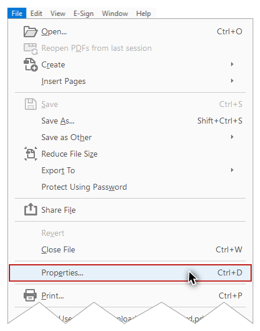
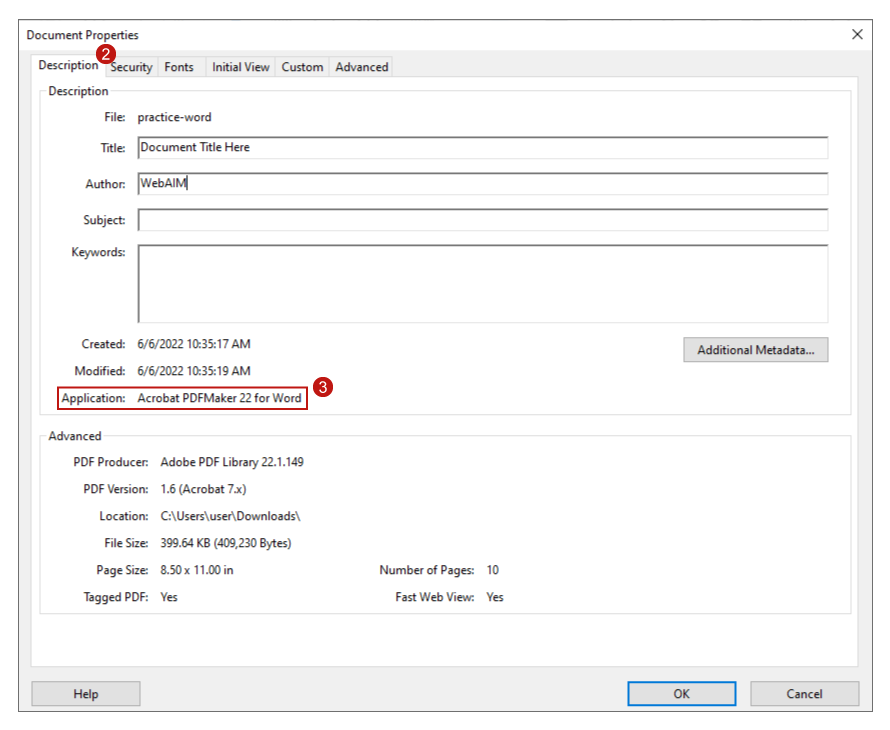
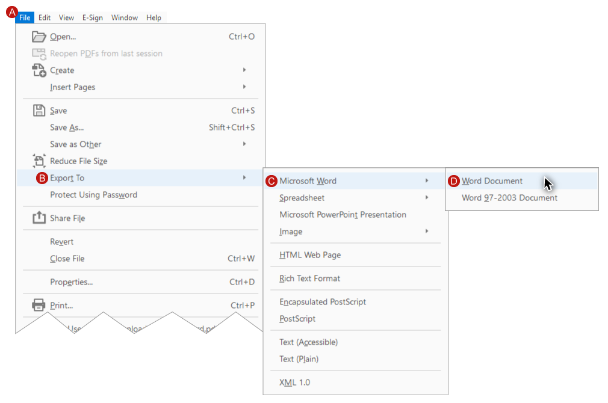

Video
Example Files
Guide
Introduction to Optimizing PDFs - Part 1
Before getting into detail about creating a PDF that is optimized for accessibility, we need to agree on what that means. People have many different types of disabilities, so it's unrealistic to expect that one document will ever be optimized for all people. What we can do, however, is optimize a PDF to meet the needs of the widest spectrum of users, and avoid common accessibility pitfalls. In this video I’ll demonstrate how to identify the application used to create a PDF, and how to export a PDF created with Word or PowerPoint back to these applications when you don’t have access to the source document’s file.
Objectives
- Describe the process in Acrobat for identifying the application used to create a PDF.
- State the process used in Acrobat to export a PDF back to Word or PowerPoint.
The focus of this module is on putting the finishing touches on a PDF that was created from a well-structured source document. For a PDF that was created without sufficient document structure, the process for reviewing and repairing accessibility issues is often time consuming, and it requires a much higher level of expertise with Acrobat. This process is called “PDF remediation,” and it lies beyond the scope of this course.

If the source for a PDF with insufficient document structure was a Word or PowerPoint file, many accessibility issues can be addressed by making changes in the source document’s application, and then creating a new PDF.
Identifying a Source Application
If the source for a PDF with insufficient document structure was a Word or PowerPoint file, many accessibility issues can be addressed by making changes in the source document’s application, and then creating a new PDF. If a source document is not available, Acrobat can provide you with information on the application that was used to create a PDF. I’ll open example file #1 in Acrobat on Windows.
In Acrobat running on Windows (or Mac), to identify the application used to create a PDF:
-
On the FILE application menu select “Properties” (the “Document Properties” dialog opens).

-
Make sure the “Description” tab is selected.
-
In the Description section the last field––Application––identifies the software that was used to create the PDF.

In this example, the application is “Acrobat PDFMaker for Word.”
Exporting a PDF to a Source Application
Word
Now that I know which application was used to create the PDF, I’ll use Acrobat to export back to Word. I’ll select:
- File
- Export To
- Microsoft Word
- Word Document

PowerPoint
Next I’ll open example file #2 in Acrobat on Windows. By repeating the process I used before––navigating to File > Properties > Document Properties dialog > Description tab > Application––I see that this PDF was created in PowerPoint. To export back to a PowerPoint file I’ll select File > Export To > Microsoft PowerPoint Presentation.
Now that you know how to identify a source application, and how to export a PDF to a source application file, you’re ready for the Part 2 video where you will:
- Explore three conceptual PDF “layers.”
- Review the one-time setup required the first time you use Acrobat to optimize a PDF.
- Receive an introduction to WebAIM’s three steps for optimizing a well-structured PDF.